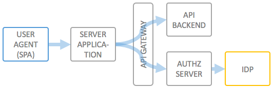

End user authentication via an external identity provider for confidential clients
Describe a scenario for the OAuth 2.0 Authorization Code grant.

Scopes, storing scopes,... this is not well supported yet. You can do it yourself, but you will not get that much help.
Also important regarding this is the Kong Issue 454 (for which there is a pull request).
Trusted apps, third party apps,...
To be written.
© 2016-2018 Haufe-Lexware GmbH & Co. KG, www.haufe-lexware.com, www.haufe.de, www.lexware.de, www.haufe-akademie.de